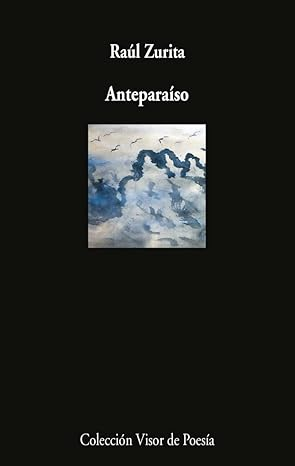

Anteparaíso: 975
RAÚL ZURITA nació en Santiago, Chile, en 1950. Ha recibido premios del Guggenheim y de los Andes, el Premio Pablo Neruda, José Lezama Lima, Premio Nacional de Literatura de Chile, entre muchos otros premios nacionales e internacionales. El 2 de junio de 1982, en la ciudad de Nueva York, escribió su poema La Vida Nueva, creado a 4.500 metros de altura mediante aviones que lo acercaban con letras blancas húmedas recortadas contra el cielo azul. Cada una de las 15 frases de este poema tenía aproximadamente 9 kilómetros de largo, por lo que podía verse desde grandes tramos. Este libro ha sido traducido a otros idiomas al ruso y al inglés. La extraordinaria poesía de Zurita es la nueva gran sucesora de Neruda y la culminación de la poesía hispanoamericana. EVGUENI EVTUSHENKO, Literatura Inostrannaia La trágica historia de Chile prueba el fuego en el que se forjó la visión milenaria de este joven poeta. La poesía que emerge es alternativamente fría, suave, estremecedora y, en última instancia, liberadora. Un libro extraordinario. JOHN ASHBERY